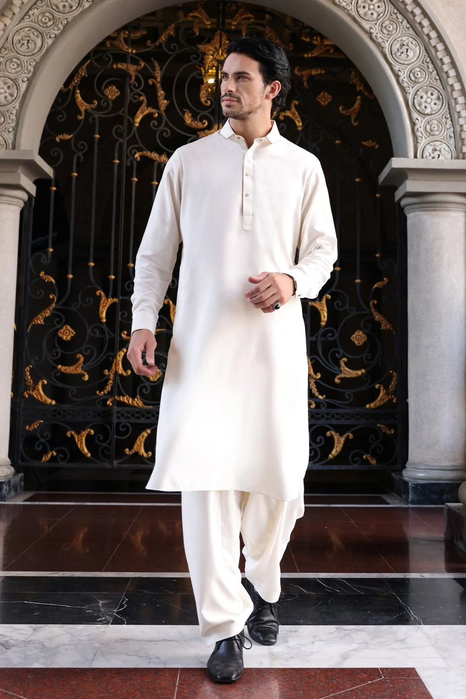

What it means to me
The reason why I chose this artifact to make this website about and why it means a lot to me is because despite me not wearing it a lot, whenever I do wear it, it makes me feel more closer to my culture, the feeling of being South Asian, and feeling closer to my family from the same culture. It may seem like a regular suit to some but for me I always look forward to events when I am wearing a shalwar kameez, it is nice to break away from the western culture for a bit and be part of my culture. It is also very comfortable to wear and has a very soft feeling to it, but also thin so it can be a little chilly in it at times. I also enjoy a lot of the differnet designs that are offered on it. I hope I can get a chance to wear one again soon.
